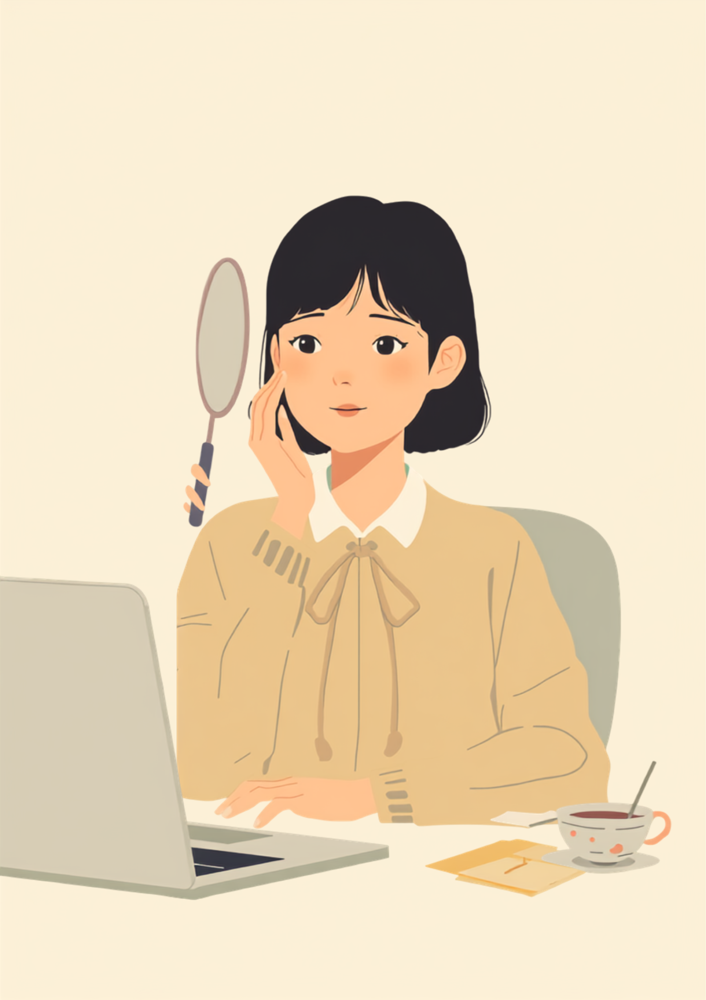
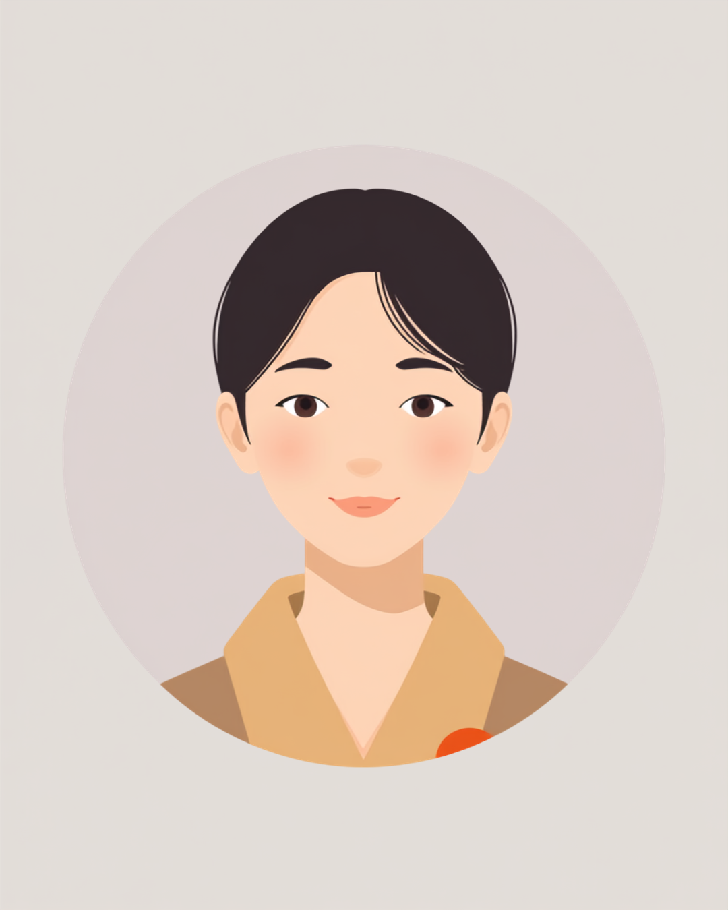

オンライン会議の画面に映った自分の顔を見て、あれ、と思ったことがある。笑ったつもりなのに、片方の口角しか上がっていない。誰に何を言われたわけでもないのに、なんとなく画面越しの空気が微妙な気がして、それ以来、会議中はできるだけ表情を動かさないようにしている。そんな話を、就労支援の現場で何度か聞いたことがあります。
PR



笑おうとするたびに、鏡でこっそり確認する癖がついた
愛想笑いのつもりが、片方だけ引きつる

顔面神経麻痺は、顔の表情を動かす神経の働きが低下し、片側の眉や目、口もとが思うように動かせなくなる状態です。多くはある日突然起こり、時間とともに回復していく方が多い一方、動きの左右差やこわばりが後遺症として残る方もいるとされています。まめざる
就労支援の現場で関わってきた中で、顔面神経麻痺のあとの後遺症を抱えながら働く方から聞いた話に、共通する感覚がありました。笑おうとすればするほど、逆に変な顔になるという感覚です。普通に振る舞おうとして口角を上げようとすると、動く側だけが先に反応して、動きにくい側が置いていかれる。結果として、笑顔のつもりが引きつったような表情になってしまい、本人としては愛想よくしようとしているのに、それが裏目に出てしまうという構造があるようです。
この「頑張るほど不自然になる」という感覚は、外から見ているだけではなかなか想像しづらいものかもしれません。本人は無表情でいたいわけでも、愛想を悪くしたいわけでもなく、むしろその逆で、いつも通りに感じよく振る舞おうとした結果として、意図しない表情になってしまう。そのずれが、じわじわとしんどさを積み重ねていくようです。
!
顔面神経麻痺の原因や回復の経過、後遺症の現れ方には個人差があります。この記事はいくつかのケースを組み合わせて書いており、特定の一人の体験ではありません。気になる症状がある場合は自己判断せず、耳鼻咽喉科や神経内科などの専門医にご相談ください。
「発症してもう3年経つんですけど、今でも接客中に鏡でチラッと自分の顔を確認しちゃいます。レジでお客さんに『いらっしゃいませ』って笑顔で言ったつもりなのに、後で店長に『さっき、ちょっと怖い顔になってたよ』って言われたことがあって。悪気ないのは分かってるんですけど、その日は帰り道でずっとそのことを考えてました。愛想よくしようとした結果がこれかと思うと、正直めちゃくちゃ落ち込みました。」
30代・女性（顔面神経麻痺の後遺症・販売職）
意識して動かそうとする部分ほど、かえって左右差が目立ちやすい
「怒ってる?」「愛想が悪い」と誤解される場面
顔面神経麻痺の後遺症は、見た目だけを見ても分かりにくい場合が多いとされています。だからこそ、周囲は表情をそのまま「今の気分」として受け取ってしまいがちです。口角が思うように上がらないことが「不機嫌そう」に見えたり、まばたきの回数や間合いが違うことが「話をちゃんと聞いていない」ように見えたりすることがあるようです。本人にそのつもりがなくても、表情から受け取る印象が先に立ってしまう場面は少なくないようです。
特に接客業や、初対面の人と話す機会が多い仕事では、この誤解が積み重なりやすいという声もあります。何度も同じように誤解されると、次第に「表情を動かすこと自体が怖い」という気持ちになり、あえて表情を作らないようにする方もいるようです。ただそれはそれで、今度は「無表情で冷たい人」という別の誤解を招いてしまうこともあり、どちらに転んでもしんどいという状況に陥りやすいようです。
i
オンライン会議では画面越しに表情が伝わりにくく、実際の表情よりも硬い印象を与えてしまうことがあるといわれています。声のトーンやチャットでのリアクションなど、表情以外の手段を併用している方もいるようです。
「営業やってるんですけど、オンライン商談のとき相手が急に真顔になったことがあって、後で同僚に聞いたら『さっきの人、微妙な顔してましたね』って言われたらしいんです。多分こっちの表情のせいだと思うんですけど、その場では何も言えなかったです。半年くらい前からこういうことが増えて、正直営業職向いてないのかもって考えることもあります。でも数字自体は悪くないので、辞める決心もつかなくて。」
40代・男性（顔面神経麻痺の後遺症・営業職）
今のところ見つけている、表情との付き合い方
全部を説明しようとしなくていい
顔面神経麻痺の仕組みや発症の経緯まで詳しく説明する必要はないとされています。相手が誤解しないために必要な範囲だけ、先に伝えておくという方法をとっている方もいるようです。
- 「表情が動かしにくいことがあって、無愛想に見えたらごめんなさい」
- 「怒っているように見えても、大抵は普通の状態です」
- 「オンライン会議では表情が伝わりにくいので、声やチャットで反応します」
相談の一コマ

相談者
笑おうとすればするほど変な顔になるので、最近は接客中あまり表情を動かさないようにしてるんです。でもそれはそれで「愛想がない」って言われそうで、どっちにしても怖くて。
まめざる
動かしても、動かさなくても誤解されるかもしれないという不安、すごく分かります。その場合、表情だけに頼らずに伝える方法を先に決めておくと、少し気持ちが軽くなるかもしれません。
相談者
表情以外というと、具体的にはどういうことですか。
まめざる
「いらっしゃいませ」の声のトーンを少し明るくする、相槌の言葉を増やす、というように声の方で感じのよさを補っている方もいるようです。それと合わせて、信頼できる上司にだけ一言伝えておくのも一つの方法だと思います。
相談できる窓口
後遺症の程度によっては、身体障害者手帳の対象となる場合があるとされていますが、審査基準や区分は自治体や症状の内容によって異なります（2026年9月時点の情報です）。表情筋のリハビリを専門とする医療機関もあり、時期や方法によって適切なアプローチが変わるとされているため、自己流のトレーニングを始める前に主治医に相談することをお勧めします。
- 耳鼻咽喉科・神経内科（症状の経過や、表情筋リハビリの相談）
- 自治体の障害福祉窓口、身体障害者手帳の相談窓口
- 職場に選任されている産業医（50人以上の事業場に選任義務あり）
- 就労移行支援事業所（伝え方や働き方についての相談）
表情は、気持ちを伝える手段のひとつではありますが、それがすべてではありません。声のトーンや言葉選びなど、他にも感じのよさを伝える手段はあります。表情だけで自分を評価されている気がしてつらいときは、そのことを少し思い出してもらえたらと思います。まめざる
顔面神経麻痺の原因や回復の経過、後遺症の現れ方には個人差があります。この記事の内容がそのまま当てはまるとは限らないため、実際の判断は主治医や専門機関とよく相談しながら進めることをお勧めします（2026年9月時点の情報です）。
愛想笑いのつもりが引きつって見えるのは、あなたの気持ちの問題でも、努力不足でもありません。表情だけに頼らない伝え方を、少しずつ自分のペースで見つけていけば大丈夫です。
よくある質問
Q. 顔面神経麻痺の後遺症は自然に治りますか？
発症からの経過や重症度によって回復の程度は大きく異なるとされています。完全に元通りになる方もいれば、表情筋のこわばりや動きの左右差が後遺症として残る方もいるようです。気になる変化がある場合は、自己判断せず耳鼻咽喉科や神経内科などの専門医に相談することをお勧めします。
Q. 職場には後遺症のことをどこまで説明すればいいですか？
病名や発症の経緯まで詳しく説明する義務はないとされています。「表情が動かしにくく、愛想が悪く見えることがあるかもしれない」など、相手が誤解しないために必要な範囲だけ伝える方法で十分な場合が多いようです。
Q. オンライン会議で表情が伝わりにくい場合、どう対処すればいいですか？
あいづちを声に出す、チャットで反応を添えるなど、表情以外の手段で伝える工夫をしている方がいるようです。カメラをオフにする選択肢が使える場面かどうか、事前にチームで確認しておくと安心という声もあります。
Q. 顔面神経麻痺の後遺症は身体障害者手帳の対象になりますか？
後遺症の程度によっては、身体障害者手帳の対象となる場合があるとされていますが、審査基準や区分は自治体や症状の内容によって異なります。詳しくは主治医や自治体の障害福祉窓口にご確認ください（2026年9月時点の情報です）。
Q. 表情筋のリハビリやトレーニングは受けられますか？
発症後の時期によって適切な対応は異なるとされ、急性期に自己流で表情筋を動かすトレーニングを行うと逆効果になる場合もあるといわれています。表情筋リハビリを専門とする医療機関もあるため、時期や方法については主治医に相談しながら進めることをお勧めします。
誤解されやすいのは表情のせいであって、人柄のせいではない
PR


一人で抱え込む前に、今の気持ちを話してみませんか
「まだ迷っている」段階でも大丈夫です。mimemimeの無料相談は、今の状況の整理から一緒に始められます。
無料で話してみる
この記事に、聞いてみたいことはありますか？
「自分の場合はどうなんだろう」と思ったことを、気軽に書いてみてください。いただいた質問は個別にお返事したうえで、匿名で記事にすることがあります。
おのざる
mimemime代表。就労支援の現場経験をもとに、障がいのある方の働く不安に寄り添う記事を執筆。